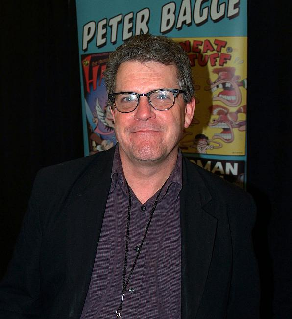
×
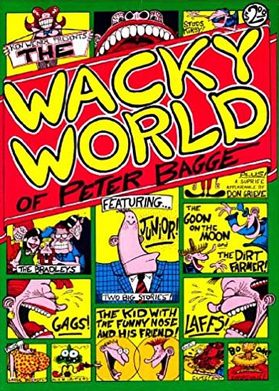
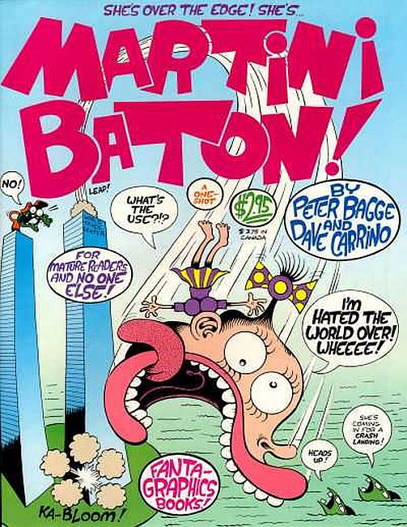
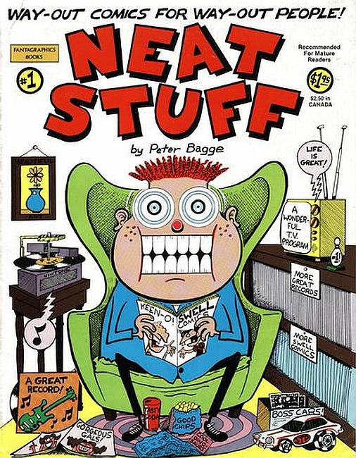
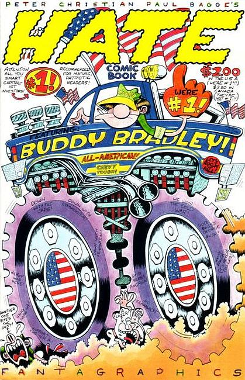
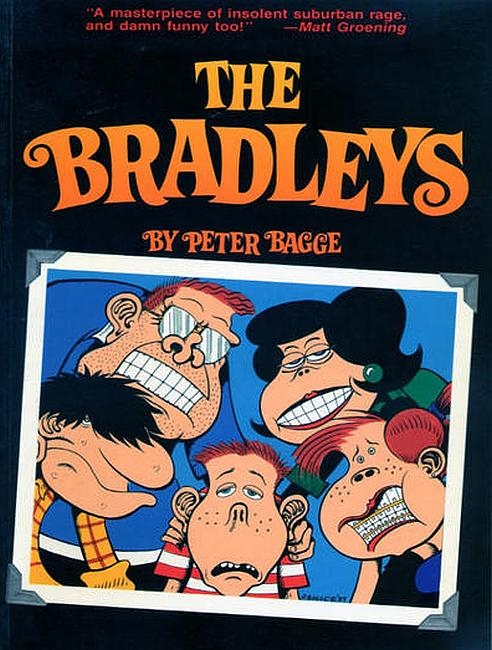
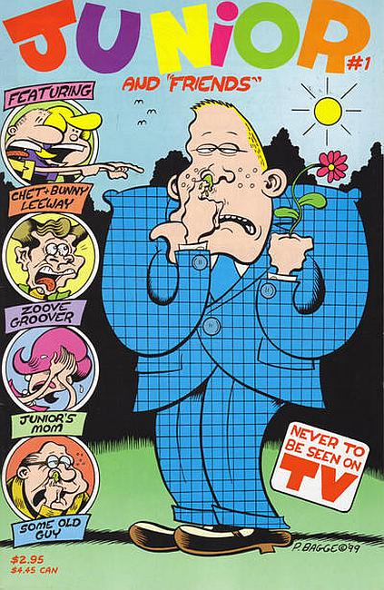
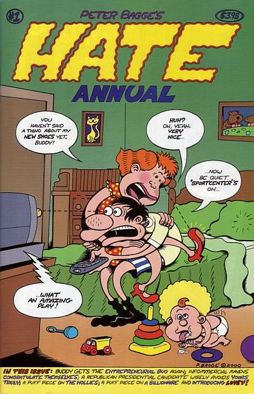
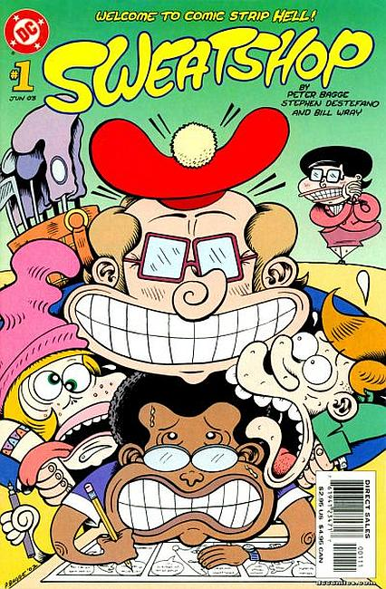
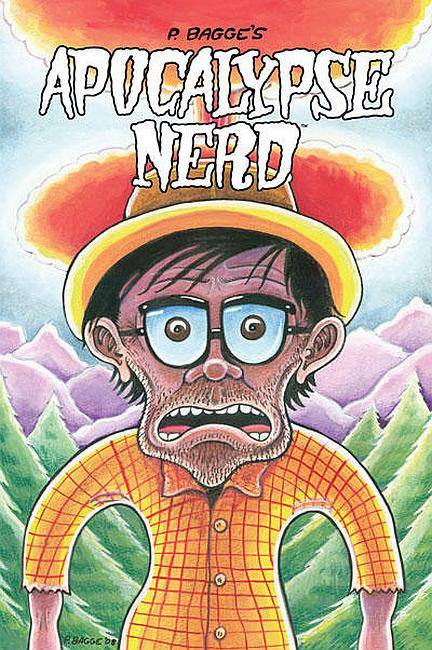
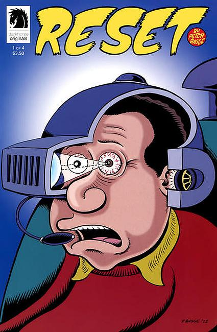
❮
❯
Peter Bagge (December 11, 1957) is an American cartoonist whose best-known work includes the comics Hate and Neat Stuff. His stories often use black humor and exaggerated cartooning to dramatize the reduced expectations of middle-class American youth. He won two Harvey Awards in 1991, one for best cartoonist and one for his work on Hate. Bagge has expressed his libertarian views in features for Reason.
Series
The Wacky World of Peter Bagge/Ken Weiner (1982)
Martini Baton (1993)
Neat Stuff (1985–1989)
Hate (1990–1998)
The Bradleys (1999–2000)
Junior and Friends (2000–2001)
Yeah! (1999-2000)
Hate Annual (2001–2011)
Sweatshop (2003)
Apocalypse Nerd (2005–2007)
Reset (2012)
Collected editions
The Bradleys (1989)
Studs Kirby: The Voice of America (1989)
Junior and Other Losers (1990)
Stupid Comics (1992)
Hey, Buddy! (1993)
Buddy the Dreamer (1994)
Fun with Buddy + Lisa (1995)
Buddy Go Home (1998)
Buddy's Got Three Moms (1999)
Buddy Bites the Bullet (2001)
Buddy Does Seattle (2005)
Buddy Does Jersey (2007)
Apocalypse Nerd (2008)
Everyone Is Stupid Except for Me and Other Astute Observations (2009)
Yeah! (2011)
Bat Boy (2011)
Reset (2013)
Buddy Buys a Dump (2013)
Sweatshop (2015)
The Complete Neat Stuff (2016)
Graphic novels
Other Lives (2010)
Woman Rebel: The Margaret Sanger Story (2013)
Fire!!: The Zora Neale Hurston Story (2017)
Credo: The Rose Wilder Lane Story (2019)